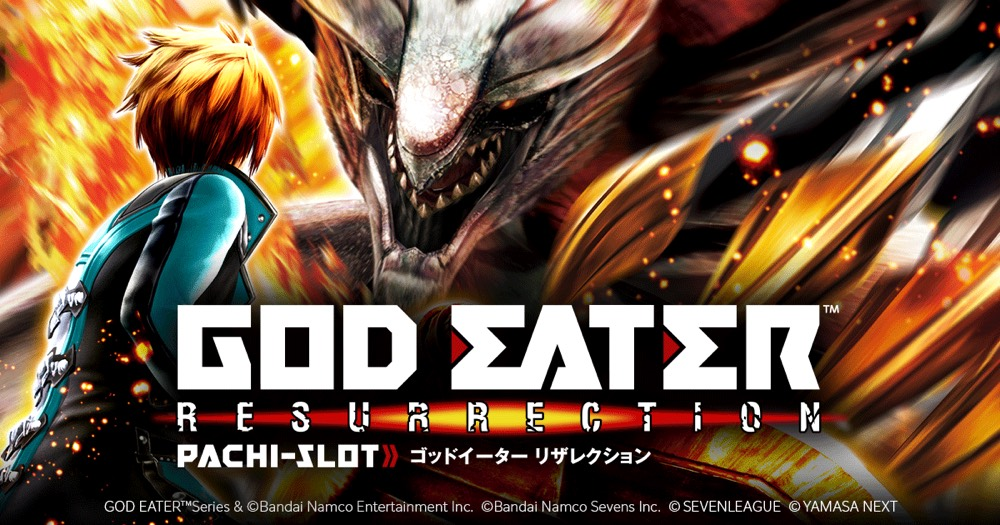

スマスロ ゴッドイーター リザレクション
25G＋αのアラガミ交戦を突破し、捕喰報酬と上位STをつなぐ討伐型AT。
- 導入
- 2024年7月
- メーカー
- セブンリーグ
- 分類
- パチスロ
主要スペック
純増約9.0枚/Gのアラガミバーストで規定枚数を獲得し、25G＋αのアラガミ交戦へ。討伐後の『神を喰らえ』、OVERKILLの神機覚醒、逆鱗ハンニバル、リザレクションゲート、上位STまでを専用画面で体験できます。
- アラガミ交戦は25G＋α・平均勝利期待度約76%
- 報酬『神を喰らえ』は最低200枚
- 上位ST『漆黒の捕喰者』はバトル勝利期待度約84%
スマスロ ゴッドイーター リザレクションの見どころと計算条件
純増約9.0枚/Gのアラガミバーストで規定枚数を獲得し、25G＋αのアラガミ交戦へ。討伐後の『神を喰らえ』、OVERKILLの神機覚醒、逆鱗ハンニバル、リザレクションゲート、上位STまでを専用画面で体験できます。
スマスロ ゴッドイーターを数字で早分かり
AT初当りからアラガミバースト、漆黒の捕喰者／神堕までの流れと、設定ごとの結果差を固定レートで比較できます。
30秒で分かるスマスロ ゴッドイーター
100枚の初回ストーリーから25G＋αのアラガミ交戦へ入り、討伐報酬を積み重ねて上位STを目指す討伐ループ型です。
こんな遊び方に向いている
- 対戦相手と弱点役を見ながら交戦したい
- 討伐後のPUSHで報酬種類を開きたい
- 逆鱗ハンニバルから上位STを狙いたい
遊ぶ前に確認したいこと
- 純増・主要ゲーム数・公開期待度・最低報酬を反映
- 結合崩壊、OVERKILL、上位分岐を専用表示
- 未公表の選択率・振り分けは体験用代表値
ストーリーからアラガミ交戦へ
AT『アラガミバースト』は、規定枚数を獲得するストーリーパートと、25G＋αのアラガミ交戦で構成されます。初回ストーリーは100枚、以降は直前の報酬枚数を消化して交戦へ進みます。
ストーリー中はリプレイ・レア役でフェンリルポイントを獲得し、MAX到達で結合崩壊ストックや枚数上乗せに期待できます。シミュレーターでは結合崩壊を交戦の勝率補助として表示します。
アラガミ交戦は敵ごとに弱点が違う
アラガミ交戦は25G＋αで、平均勝利期待度は約76%。ハンニバルはチャンス目、エンハンス・アラガミはチェリー、ヴィーナスはスイカなど、対戦相手ごとに有効役が異なります。
専用画面では対戦相手と弱点役を表示し、25Gを進めた後のPUSHで討伐結果を開きます。結合崩壊ストックがある場合は、その有利さも当落画面へ反映します。
討伐報酬『神を喰らえ』
討伐成功後は1Gの報酬決定『神を喰らえ』へ進み、最低200枚を獲得します。壱式・ミズチ・パニッシャー・ベンディガー・金ノ咢・漆黒リンドウを段階別の報酬として表示します。
OVERKILL時は強力な報酬決定『神機覚醒』へ。報酬種類やOVERKILL発生率など公表されていない細かな振り分けは、ゲーム性を体験するための代表値です。
1,000枚以降の逆鱗ハンニバル
AT獲得が1,000枚を超えると、50G＋αの逆鱗ハンニバルが選ばれる可能性があります。勝利期待度は約75%で、敗北時も次回ATの100Gゾーンが濃厚となる救済があります。
勝利時は残りゲーム数を加えた50〜99Gのリザレクションゲートへ。主人公覚醒なら勝利期待度約84%の上位ST『漆黒の捕喰者』、リンドウ覚醒なら継続期待度約90%のプレミアムAT『神堕』へ進みます。
固定条件と簡略化する範囲
- 約31G/50枚・1,000円46枚貸し・5.2枚交換で固定
- 設定1〜6を均等抽選し、AT初当りは公開設定別値を使用
- 純増、主要ゲーム数、交戦・上位の公開期待度、最低報酬を優先
- 敵選択率、報酬振り分け、結合崩壊・OVERKILL・上位分岐は体験用代表値
- 19,000枚到達時はコンプリート表示
平均Gと投資目安の計算
掲載するアラガミバースト初当り約1/351.9は設定1基準です。当サイトでは50枚あたり31G、1,000円46枚貸しの固定条件から、設定1基準の平均投資目安を約12,300円と計算します。
シミュレーターでは設定1〜6を均等抽選します。設定1〜6で公開されている初当り値を個別に使います。公開されていない特化ゾーン・上位到達率の設定差は加えません。 換金は5.2枚交換で固定し、結果とランキングに設定を表示します。
シミュレーション結果の見方
当るまでAT初当り・アラガミバーストまでのゲーム数
設定設定1・2・3・4・5・6から抽選された今回の設定
上位到達リザレクションゲートと漆黒の捕喰者／神堕への到達
最終収支差枚と5.2枚交換の収支目安
結果は自動で「マイ記録」に保存され、同じ機種を何回試したか、最高収支、勝率をあとから確認できます。
簡易シミュレーターについて
AT初当り・アラガミバースト・漆黒の捕喰者／神堕の流れを固定条件で体験できます。JavaScriptを有効にすると、この位置にシミュレーター、演出、マイ記録、機種別ランキングが表示されます。
結果は娯楽・確率理解のための参考表示です。金銭的価値や交換価値はなく、実際の勝敗や収支を保証しません。18歳未満の方の利用はお控えください。
スマスロ ゴッドイーターのよくある質問
スマスロ ゴッドイーターはどんな台？
純増約9.0枚/Gのアラガミバーストで規定枚数を獲得し、25G＋αのアラガミ交戦へ。 アラガミ交戦は25G＋α・平均勝利期待度約76%が主な確認ポイントです。
スマスロ ゴッドイーターの平均投資目安は？
設定1基準のアラガミバースト初当り約1/351.9と、50枚あたり31G・46枚貸しの固定条件から、平均12,300円を目安として表示します。実際の設定や遊技状況で結果は変わります。
設定とゲームの流れはどう抽選する？
開始時に設定1・2・3・4・5・6から1つを均等抽選し、AT初当り、アラガミバースト、リザレクションゲート、漆黒の捕喰者／神堕の順で到達を判定します。設定は最終結果とランキングに表示します。
収支はどう計算する？
1,000円46枚貸し・5.2枚交換の固定条件で投資、換金、収支目安を計算します。実店舗の再プレイ、持ちメダル、端数処理は含みません。